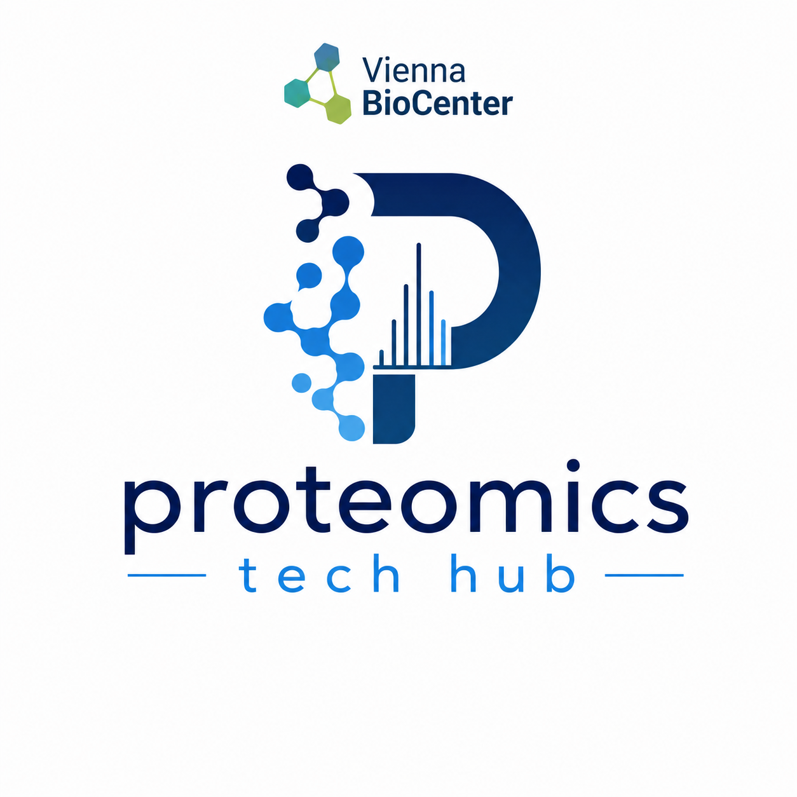

We are the Proteomics Technology Hub at the Vienna BioCenter — we are method developers at heart focusing on structural proteomics, single cell (multi)-omics and spatial proteomics to measure, map, and understand the biological processes at detail. Our new website is currently under construction and will be live shortly.